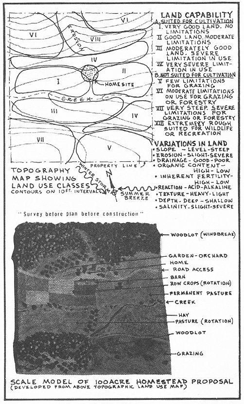

Reduced to basic terms, a productive homesteader must exert some measure of control over his environment. Implementing control requires various forms of physical development, starting with goals and ending with the means for achieving these goals. We are constantly perceiving new needs and, to satisfy them, new patterns of activity are adopted: new forms are created and new means utilized. The developmental process is cyclic. We start with the elimination of old, unsatisfactory forms and patterns and-through the process of research, design and production-we create new, more satisfying forms and patterns. This process creates a rhythmic and balanced continuity in homestead development. It is truly a work of art.
Art is the making of things for the right reason. A homesteader is an artist, therefore, to the extent that he makes things according to the purpose of right reason, and to the extent that he becomes fully involved in the making: He uses his whole person . . . his body, his mind, his choosing and his imagination. In other words, the artist-homesteader first determines the purpose of the thing made (the Moral Cause); second, he uses his imagination to design an image of that thing which is foreseen (the Formal Cause); third, he seeks an understanding of the materials selected and used to create the thing imagined (the Material Cause); and finally, he selects the right tool to shape the material into the form desired (the Efficient Cause).. Look after the causes of things; the effects will take care of themselves.
No one expressed these sentiments better than did Eric Gill who, in a lecture on Work and Culture; had this to say about man's sublimation into a "condition of intellectual irresponsibility":
How can it be agreed that food, clothing and shelter shall be produced en masse, by machinery, and simply as objects of merchandise, things produced solely for the profit of investors of capital, and yet that, fed on machine-made food, dressed in machine-made clothes, housed in machine-made buildings, we shall be able in our leisure hours-the hours when we are not working in the factories-to produce and enjoy the products of human cultivation?
What an environment!
And environment is important, because it is as necessary as the thing environed.
You cannot have responsible human beings in their leisure time, if they are not responsible in their working time.
For working is the means to living, and it is life for which we have responsibility.
You cannot have responsibility for your work unless you have control over it.
You cannot have control over it unless individually or collectively you own it.
We have destroyed the ownership and control, and therefore the responsibility of the workers, and placed these things in the hands of those who, by the nature of the case, neither have, nor can have, any interest in the matter other than a financial one.
And the evil recoils on them also.
For what can be bought with the precious dividends but the inhuman and degraded products of sub-human and degraded workers and of a sub-human and inhuman method of production.
The subject of this and the following chapter deals with setting up homestead development goals and implementing these goals through developmental means. This twin thought-and-work concern comprises the essential backbone of the homestead process. It surely has more to do with a homesteader's success or failure than any other single factor. And it answers the probing questions: What to do? And how to do it? That is, what type of homestead program-in terms of crops, livestock, foods, etc.-is to be set up; and what practices and operations-in terms of time, energy and labor-is to be adopted to achieve these goals. It is hoped that these final two chapters provide the degree of insight required for the culmination of a totally satisfying, successful homesteading experience.
Observation becomes the starting point for any systematic analysis of homestead goals: SURVEY BEFORE PLAN BEFORE CONSTRUCTION. A thorough site observation is needed before one can complete the form, "To Program Your Homestead Development", found at the end of this book. Before any amount of planning can take place one needs to know exactly with what he has to work. Existing climatic, soil, topography, and vegetation resources are as important bits of information to the homestead-designer as are the homesteader's personal needs, likes and dislikes.
M.G. Kains, author of many fine books on homesteading, has this to say about the translation of observation into terms of understanding, decision and action:
One of the most profitable habits yon can form is systematically, every day, to go over at least part of your premises in a leisurely, scrutinizingly thoughtful way, and the whole of it at least once each week throughout the year to reap the harvest of a quiet eye and fill the granary of your mind with knowledge of the habits of helpful and harmful animals, birds and insects; to observe and understand the characteristics of plant growth from the sprouting of the seed through all the stages of stem, leaf, flower, fruit and seed development; to note and interpret the behavior of plants, poultry and animals under varying conditions of heat and cold, sunshine and shade, drought and wetness, fair weather and foul, rich and poor feeding.
One most important part of the survey process is classification of homestead land capability. As used here "capability" relates to best usages and limitations in handling the land and not to mere productive capacity. In most regions of the U.S. the Soil Conservation Service will prepare anyone a land classification map, free of charge. But an essential part of discovering a proper solution for land use lies in the assemblage of facts for the preparation of the map itself . . . each homesteader should therefore be directly involved in preparing his own inventory map.
The map is prepared by first walking over the land and carefully examining all the significant variations in land features. The soil variations can be simply determined by using a soil auger. One brief sample of earth will indicate topsoil depth, texture, permeability, available moisture capacity, inherent fertility, organic matter content and other characteristics that affect the use, management and treatment of the land. Simple visual observation will indicate slope of land, degree of erosion, wetness and drainage. All of this information should be recorded on an aerial map (oftentimes available from the Soil Conservation Service) or on a U.S. Geological Survey map.
The Soil Conservation Service has categorized eight land-capability classes, according to those properties that determine the ability of the land to produce on a virtually permanent basis. Classes range from the best and most easily farmed land (Class I), to land which has no value for cultivation, grazing or forestry but which may be suitable for wildlife, recreation or watershed protection (Class VIII).
Following the survey, the planning process involves matching personal need to existing resources. It is here that first failures occur: Too often limited resources are utilized to satisfy unrealistic needs. Or the balance and rhythm of slow growth is superseded by a more impatient tour de force. Remember, it takes time to organize and operate a homestead. At any given moment a homesteader may still be far from an optimum level of management, or from the ultimate goals for which he is striving. Even goals themselves change over a homesteader's life cycle. A dynamic approach is therefore required.
One of my favorite, long-term but still incompleted projects is the formulation of a self-test for potential homesteaders, to determine homestead abilities, probable .success and failure. The test is self-scoring and should go far in at least determining probable dropouts before their own tragic discovery of ineptitude. This self-appraisal is divided into three categories: an evaluation of a homesteader's character . . . his interest and attachment and patience to deal with plants and animals; his physique . . . stamina to handle the extra work, and his motivation . . . willingness to give up time on a regular basis for chores and homestead maintenance.
The fact that homesteading is a family affair somewhat complicates the formation of a self-test of this nature . . . the lack or presence of some essential attribute in a homesteader's background may be compensated for by characteristics found in his wife (or husband), or in the children.
Homestead vocational guidance programs are more easily organized and deal primarily in three areas: tests for proficiency, evaluation of personal characteristics, and some indication of past experience and performance in homestead activities.
Agribusiness economists have been studying the attributes and characteristics of "good" and "poor" farmers since 1929 when the first questionnaire by the Bureau of Agricultural Economics was published. It is interesting to compare the 10 most significant factors in determining financial success, established by this early study, with those attributes found to be important in a study made 23 years later:
The purpose of studying good and bad farmer attributes, by the various college departments of agricultural economics, was done primarily to benefit landlords and their farm managers . . . as an aid to seek the best farm tenants. Bankers and other creditors are also aided by these questionnaires in the help received for evaluating the personal characteristics of prospective borrowers. Subsistence-level landholders can effect little assistance from such "public" institutions. In only a small way do these studies relate to the self-actuating, owner-builder-homesteader. In one study (University of Illinois, 1949) 360 questionnaires were filled out by farmers describing the attributes they felt constituted a poor farmer. Some of the attributes associated with poor farming practices seem to qualify that farmer for homesteading, like the comment made by one farmer describing attributes of his poor farmer neighbor: "Neither whiskers, nor weeds, nor uncastrated pigs annoy him."
Actually, there has been only one period in American history when a public agency was established specifically to aid the poor farmer, subsistence-homesteader class. This was during the Great Depression when President Roosevelt started the Farm Security Administration. Quite early in its operation the FSA challenged the cheap labor "plantation" system in the South, and threatened established "farm" and landlord interests in its effort to deal comprehensively with rural poverty. Destitute farmers were taught cooperative marketing techniques and self-help farmstead enterprises. Even cooperative farmstead communities were established (a total of 13, throughout the U.S.) which further threatened our free-enterprise. private-land-ownership way of life.
The demise of the FSA was wrought by our conglomerate agricultural administration . . . from the Secretary of Agriculture to the County Agent. I say "conglomerate" because a little study of the U.S. farm structure will show its interrelatedness. The powerful American Farm Bureau Federation, for instance, is a direct outgrowth of the County Agent system. The Extension Service is but one segment of this public bureaucracy which actually serves as a bureaucracy of a private organization . . . the Farm Bureau. These forceful bureaucracies, along with their counterpart, the land-grant agricultural colleges, were all originally promoted by the omniscient U.S. Department of Agriculture . . . and the whole kit and caboodle is financed by the taxpayer and controlled by agribusiness.
Agribusiness, usually in the form of a corporate-conglomerate-absentee-landlord, uses the tax-funded agricultural research of Federal and State agencies and hides behind tax laws originally set up to benefit the poor farmer . . . only to further drive him out of business. In 1950 there were 5-1/2 million farms in the U.S., with an average size of 215 acres. In 1970 there were 3 million farms, with an average size of 380 acres. The farm situation here in California is probably the worst in the nation. A big company like Tenneco exacts a 81.5-million-a-year subsidy for not growing crops! Such multi-thousand-acre companies use federally subsidized irrigation water in direct violation of the 1902 Reclamation Act . . . which limits use of such water to farms no larger than 160 acres so as to prevent monopoly land ownership!
So the small landholder can expect little assistance from the County Agent or the land-grant college . . . they are fully immersed in plant-and-animal-diseaseinsecticide-fungicide-herbicide crop-picking machinery research for agribusiness. The American Farm Bureau Federation people are in state and federal capitols lobbying against some destitute-migrant-minimum-wage-right-to-strike Chicano for the benefit of some absentee fat cat. And bureaucratic Department of Agriculture administrators disperse monies and direct the policies for an ever more powerful agribusiness. Given a choice, the Department of Agriculture favors bigness: power reserves from the federally subsidized TVA, for example, can produce either nitrate or phosphate fertilizers. Nitrates are traditionally the poor farmers' fertilizers, but prosperous farmers benefit more from phosphates. You guessed it, phosphates are produced by the TVA.
As I perceive it, grass-roots leadership in the productive homestead movement can take direction from either or both of two possible routes . . . if, indeed, homesteading is ever to be thought of as a significant, viable, alternative lifestyle for more people than those of the counterculture. First, the cooperative homestead concept fostered by the Farm Security Administration must be modernized, reevaluated and reconstituted. The physical, social and economic ramifications of the homestead community will be the subject of my following book, THE OWNER-BUILT COMMUNITY.
Secondly, regional learning centers-homestead schools, if you will-need to be established immediately. I envision five such centers throughout the U.S., and at this writing the first such center seems close to realization here in California. Recruiting the necessary expertise to operate such a plant has already begun here. Many things might happen at a homestead school besides the obvious learning of essential skills. The center can become a regional information clearinghouse; a land location service can be maintained for prospective homesteaders; certain experimental methods and processes associated with living on the land can be demonstrated or even initiated. Besides being an experimental learning center, an individualized consultation service could be made available from the center's team of experienced instructors . . . experts in everything from building, gardening, animal care and land development to home food processing and craft production.
My Homestead Planning Program offered at the end of this book is one other important adjunct to our proposed learning center. It is designed to operate as a mail-order service, "on location" at our future school or in direct relation with the homestead site.
One of my earliest homestead experiences clearly demonstrated the value and need of instruction in basic skills. In the 1950's I happened to be visiting the School of Living center in Ohio. John Loomis was putting up hay and I had occasion to assist him in this seemingly routine chore. John was one who felt that "one good head is better than a hundred strong hands", and he proceeded to instruct me in the fine art of loading the ubiquitous hayfork. Really now! A special technique for picking the hay up on the fork? John showed me how the prongs are first woven in and out of the first layer of hay so that a matted foundation is formed for the remainder of the hay to rest upon. And when hay is pitched onto the wagon, large "wads" must first be filled along both sides, to hold the central portion in place. At the end of that first day of haymaking I came away fully convinced that any prospective homesteader not instructed in the art of pitching, loading and unloading hay into the barn loft would be sure to fail in his attempt to live off the land . . . the sheer work would be sufficient to figuratively-if not literally-break his back!
A hayfork can well become the symbolic weapon of the green revolution. As such it must be used properly, as John Loomis instructed. And make certain that you do not mistakenly pitch hay with a grass or manure fork.
At this stage, however, even such common errors as improper use and choice of tools cannot substantially impede the green revolution. For actually, the revolution has come and gone, and as Ken Kesey puts it . . . "We Won!" An unknown poet says it this way:
Don't look for its soldiers in the city. Most of the real ones are long since gone to their domes and gardens, with goats and chickens the day was won. You now see only plastic imitations who will starve yelling "What's it all mean?" not knowing that the revolution has come and gone and was won in a patch of beans.
|
 |
|
|